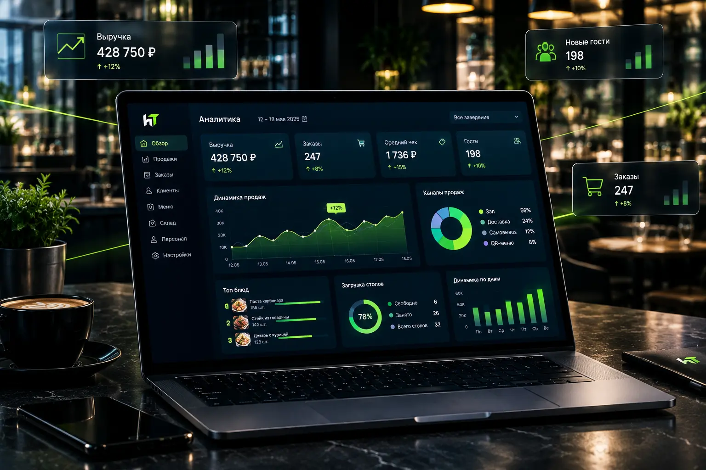

Фудкост — доля себестоимости продуктов в цене блюда. Здоровая норма для кафе — 25–30%, для ресторана — 28–33%. Если показатель выше 35% и растёт — заведение теряет маржу. И чаще всего дело не в поставщиках и не в ценах на продукты, а в учёте.
Разберём, где именно утекают деньги на кухне и как автоматизация возвращает 5–10% маржи без повышения цен для гостя.
Почему фудкост растёт
Владельцы кафе обычно знают фудкост по меню «на бумаге». Но по факту он выше, потому что:
- повара не соблюдают закладку — кладут больше, чем в тех.карте;
- нет точного учёта списаний — продукты уходят «в никуда»;
- инвентаризация раз в месяц — недостачи обнаруживаются слишком поздно;
- тех.карты устарели — цены поставщиков изменились, а блюдо продаётся по старой себестоимости;
- воровство персонала — самая частая причина, и самая неудобная для разговора.
Каждая из этих причин по отдельности даёт 1–3% роста фудкоста. В сумме — 10–15%, которые владелец не видит, потому что смотрит только в отчёт бухгалтера.
Как автоматизация закрывает утечки
1. Тех.карты в системе, а не в Excel
Когда тех.карта заведена в системе автоматизации, себестоимость блюда пересчитывается автоматически при изменении цен поставщиков. Владелец сразу видит, что маржа на «Цезаре» упала с 30% до 22%, потому что курица подорожала на 15%.
2. Списание по факту
Каждое списание продуктов фиксируется в системе с указанием причины: брак, порча, ошибка повара, съёмка для соцсетей. Через месяц статистика показывает, какая категория продуктов уходит «в никуда».
3. Инвентаризация за 30 минут вместо 3 часов
Вместо бумажного пересчёта и ручного ввода — сканирование или ввод в приложение. Инвентаризация проводится чаще и занимает меньше времени, поэтому недостачи выявляются сразу, а не в конце месяца.
4. Контроль закладки на кухне
Кухонный дисплей показывает повару точную закладку по каждому блюду. Если блюдо готовится «на глаз», система фиксирует расхождение по расходу продуктов.
5. Аналитика ABC по блюдам
Система делит блюда на три группы: топовые (приносят выручку), средние и «мёртвые». Часто оказывается, что часть меню работает в убыток: гость заказывает редко, а продукты под блюдо закупаются регулярно и списываются.

Хотите увидеть фудкост своего меню?
Зарегистрируйтесь и протестируйте систему 14 дней бесплатно. Заведите 5 блюд в тех.карты — и увидите реальный фудкост, а не тот, что вы считали вручную.
Попробовать 14 дней бесплатноЧто даёт в цифрах
На практике внедрение учёта и тех.карт даёт такие результаты в первые 2–3 месяца:
| Что меняется | Эффект |
|---|---|
| Фудкост | −5–10% (с 35% до 25–30%) |
| Списания | −30–50% |
| Время инвентаризации | с 3 часов до 30–40 минут |
| Точность прогноза закупок | +15–20% (меньше «зависших» остатков) |
| Маржа по меню | +5–8% без повышения цен для гостя |
При среднем чеке 1200 ₽ и выручке 1,5 млн ₽ в месяц снижение фудкоста на 5% возвращает заведению 75 000 ₽ прибыли ежемесячно — это те деньги, которые уходили «в никуда» через неучтённые списания и перерасход.
С чего начать
Полноценный учёт не требует радикальных изменений в работе кухни. Достаточно трёх шагов:
- Завести тех.карты по всем блюдам меню. Это база, без которой учёт не работает.
- Настроить списание — зафиксировать все причины, по которым продукты уходят со склада.
- Включить регулярную инвентаризацию — хотя бы раз в неделю по ключевым позициям.
Это делается за 1–2 недели на любой современной системе автоматизации. Дальше система сама считает фудкост, списания и остатки.
Итог
Фудкост выше 30% — это не приговор формата заведения, а сигнал, что где-то нет учёта. Пять-десять процентов маржи, которые теряются в списаниях и перерасходе, обычно больше годовой прибыли среднего кафе.
Автоматизация не заменяет повара и не мешает работе кухни — она просто показывает, где утекают деньги. А это первый шаг к тому, чтобы их вернуть.
Готовы вернуть маржу?
14 дней бесплатно, полный доступ к учёту, тех.картам и аналитике.
Попробовать 14 дней бесплатно